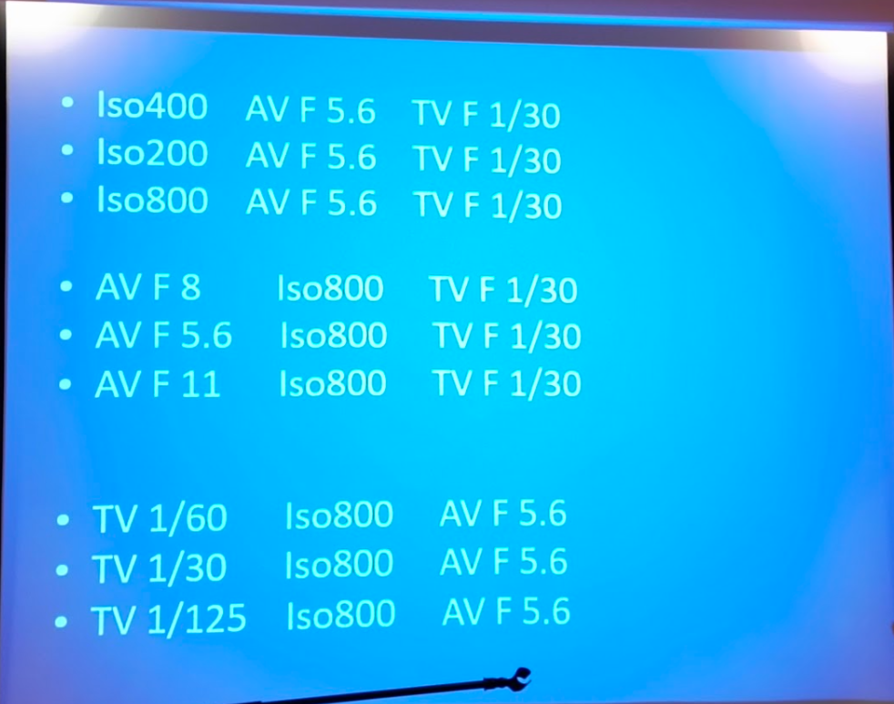
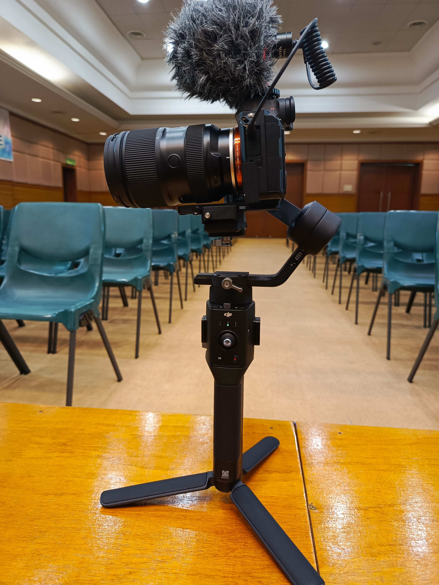
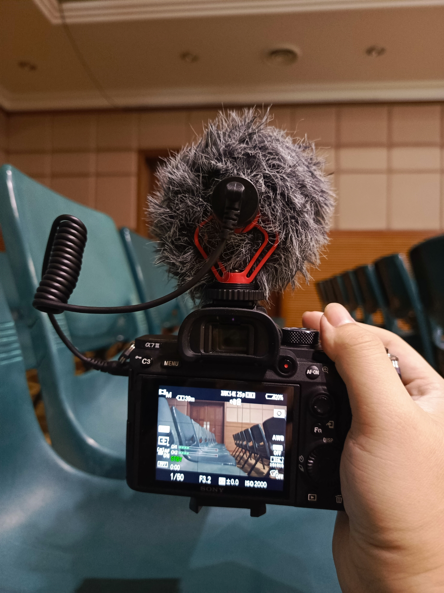
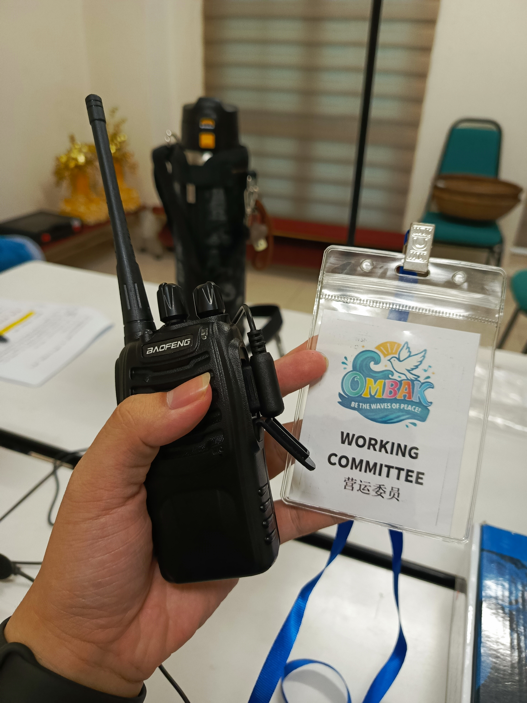

An extensive exploration into live audio signal management, hardware staging setups, and digital post-production timelines.
This project showcases full execution capability regarding real-world studio recording and engineering setups. By balancing real-time acoustic management criteria on field sets with fast post-production software compilation workflows, the final outputs are structurally balanced and fully optimized for digital asset deployment platforms.
On-site configurations, camera metrics calibrations, and communication layout elements:

Analyzing balancing matrices across ISO levels, Aperture Values (AV), and Shutter Speed/Time Values (TV) to map target illumination parameters before tracking real-time frames.

Calibrating balancing locks on a motorized DJI gimbal arm framework carrying a Sony Mirrorless system and shotgun mic layout to maintain zero shock drift throughout recording trails.

Evaluating camera metadata displays (1/50, F3.2, ISO 2000) while managing sound input captures using a high-density deadcat windscreen layer mounted over an external microphone console.

Structuring real-time backstage coordination using Baofeng radio frequency transceivers to manage live adjustments across lighting crews, PA technicians, and event controllers.